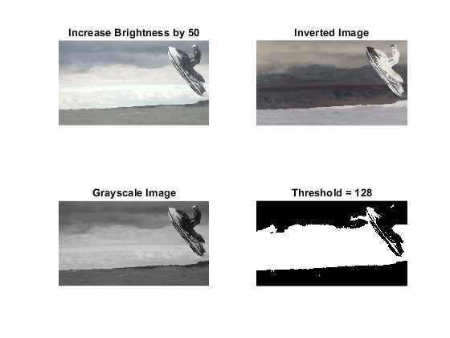
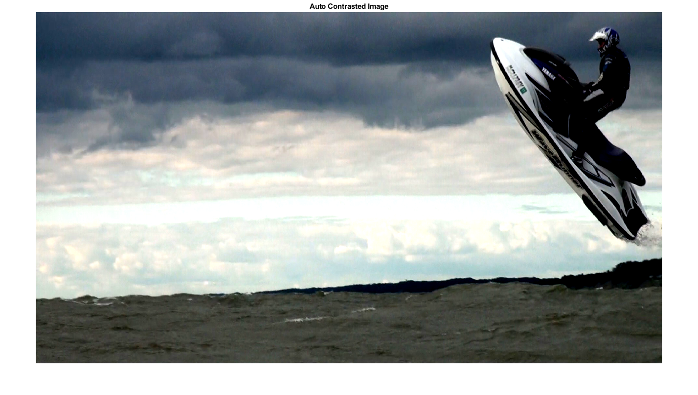

%Read in the original image using the imread command OriginalImage = imread("JetSkiAir.jpg"); %Part One %Create a single matlab file that contains a function that performs %each of the following: %Increase the brightness of the image by an integer value (can be fixed %value) %Invert the image %Transform the image to grayscale %Threshold the image based on an integer value (must first be in grayscale) %Change the title of the first figure figure('Name','Point Operations Lab'); %Create another version of the image that increases %the brightness of the original image by 50 %We just add 50 to the original image's value to increase %its brightness by 50 because it adds the value of 50 to each %element contained in its image array. In Matlab, 0 represents %black and 255 represents white so having a higher value makes %the image appear brighter. It should be mentioned that the values %are capped at 255 even if the addition of 50 to an element is higher BrightenedImage = OriginalImage+50; %Display the brightened image %The subplot command is used to determine where in the figure the %specific element will be plotted. In this case 2,2,1 is the top-left %part of the figure. We use imshow to choose which image is displayed %and the title command to choose what title appears above the image subplot(2,2,1); imshow(BrightenedImage); title('Increase Brightness by 50'); %Create the grayscale image %The rgb2gray command takes the values for each color channel present %in the image and converts them into a grayscale value. Essentially, %it takes the three color channels and converts it into one color channel. GrayscaleImage = rgb2gray(OriginalImage); %Display the grayscale image %The subplot command is being used again to determine where the image is %displayed in the figure. 2,2,3 represents the bottom-left of the figure. %The title command is used again to set what text is displayed above the %image subplot(2,2,3); imshow(GrayscaleImage); title('Grayscale Image'); %Invert the image %The way that we inverted the colors of the image is by taking the max %color channel value of 255 and subtracting each pixel value present within %the image from 255 to get its new pixel value. InvertedImage = 255-OriginalImage; %Display the inverted image %Subplot is being used to determine where the image shows up in the figure. %2,2,2 represents the top left of the figure. Then imshow determines what %image is displayed and the title command displays specific text above the %image subplot(2,2,2); imshow(InvertedImage); title('Inverted Image'); %Create threshold image the same size as grayscale one using the size %command. Also, use the zeros command to ensure only zeros are present in %the images matrix ThresholdImage = zeros(size(GrayscaleImage)); %To help seperate the foreground and the background we assign an values %above 128 to 255 which is shown as black. ThresholdImage (GrayscaleImage>128) = 255; %Display the threshold image %The subplot command determines where the image will be displayed in the %figure with 2,2,4 being the bottom-right slot. The imshow command chooses %what image is displayed and the title displays specific text above the %image. subplot(2,2,4); imshow(ThresholdImage); title('Threshold = 128'); %Part Two %Add a function that will auto-contrast the image, use the modified %auto-contrast function described in 4.4 (also read 4.3). (The percent %value you want to use for 'high' and 'low' is up to you %Display the output to a new figure %Create the Auto-Contrasted Image %Create the ImageVector by using the double command to convert its values %to the double floating-point number type ImageVector = double(OriginalImage); %Calculate the Low and High limits for contrast stretching ensuring they %are in the same data type as the ImageVector LowLimit = double(prctile(ImageVector(:), 5)); HighLimit = double(prctile(ImageVector(:), 95)); %Apply Auto-Contrast Stretching through using the formula and values we %calculated earlier. AutoContrastImage = (ImageVector - LowLimit) * (255 / (HighLimit - LowLimit)); %Clamp the values to the valid range [0, 255]. We do this by making any %values less than 0 equal to 0 and any values greater than 255 to equal %255. AutoContrastImage(AutoContrastImage < 0) = 0; AutoContrastImage(AutoContrastImage > 255) = 255; %Convert back to uint8. This step is done to ensure the image values are %put back into the same form as they were originally. AutoContrastImage = uint8(AutoContrastImage); %Display the Auto-Contrasted Image. The figure command allows us to title %the figure. Then we use imshow to choose to display the correct image and %the title command to give it the proper title. figure('Name','Auto-Contrasted Image'); imshow(AutoContrastImage); title('Auto Contrasted Image'); 